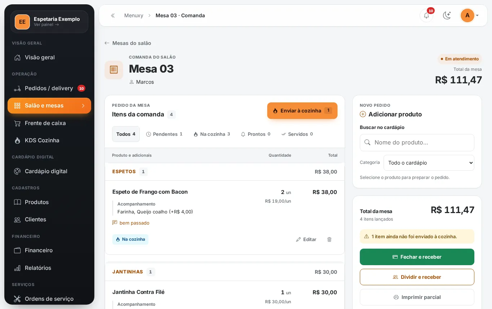

Dica: use as setas ← → do teclado.
Aprenda o Menuxy na própria tela.
Cada função do sistema com a tela de verdade, um passo de cada vez. Veja onde clicar, depois pratique tocando você mesmo.
- 31
- assuntos
- 140
- passos com a tela real
- 5
- trilhas por função

Qual é a sua função na loja?
Escolha uma trilha e o guia mostra só o que você usa no dia a dia. Dá para trocar quando quiser.